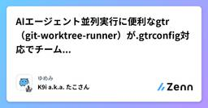
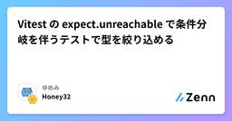
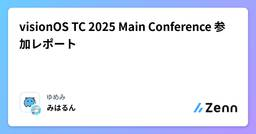

ゆめみのフィード
https://zenn.dev/p/yumemi_inc
ゆめみは、誰かの心を動かす体験をテクノロジーとデザインで形にするエンジニアリング＆クリエイティブブランドです。本サイトでは、ゆめみメンバーがプロジェクト等で得た知見/経験を紹介しています。現場での知見/経験をできるだけ多く、早く社会に還元することを目的にしているため、感想や異論な
フィード

AIエージェント並列実行に便利なgtr（git-worktree-runner）が.gtrconfig対応でチーム利用しやすくなった
ゆめみのフィード
Claude CodeやCodex CLIなどのAIエージェントを並列実行する上でgit worktree（以下worktree）が注目されています。ただworktreeはコマンドがややこしいので、補助ツールが欲しくなります😭そこでおすすめしたいのがCodeRabbitが開発しているgit-worktree-runnerというcliツールです!（公式の略称がgtrなので、今後はgtrと表記します。）gtrの提供するコマンドは便利だったのですが、これまで設定周りが少し使いづらかったのですが、最近のアプデで.gtrconfigという設定ファイルに対応しチームでの活用などもやりやすくなり...
14時間前

Vitest の expect.unreachable で条件分岐を伴うテストで型を絞り込める 1
1
ゆめみのフィード
!この記事は、Qiita の TypeScript Advent Calendar 2025 の 2025-12-08 投稿分です。 expect.unreachable、かなり便利Zod や Valibot などで作成した schema について、Vitest で Unit テストを記述する際に、「成功したかどうか」の分岐がでた時に少し困りませんか？import * as v from "valibot";export const UserSchema = v.object({ name: v.string(), age: v.number(),});// ...
6日前

visionOS TC 2025 Main Conference 参加レポート
ゆめみのフィード
要約イベント: visionOS TC 2025 [Main Conference]日時: 2025年12月6日（土）会場: Abema Towers 11F（東京・渋谷） 3つの重要な学びiOSアプリのImmersive化は思ったより簡単SwiftUIの既存技術だけで扇型レイアウトが実現可能。.rotation3DEffect()と.offset()だけで没入体験を作れる。USDフォーマットの理解が開発を加速する.usda（テキスト形式）でGit管理可能。Reality Composer Proの非破壊編集で安全に開発できる。AI活用で一人でも高...
7日前

【iOS】VoiceOver対応の実装方法 - 基本的な使い方
ゆめみのフィード
ポイントを押さえて最低限の実装で自然な読み上げを作ってみましょう。動作確認編はこちら → 【iOS】VoiceOverの動作確認方法 - シミュレータですぐ試せる 🎯 基本の考え方VoiceOver のために伝える情報は次の3つ。label：その要素が何を意味するかhint：操作したときに何が起こるかvalue：現在の状態・数値この3つを必要なところにだけつければよいです。 まずは「何もしなくていい」要素SwiftUIの標準コンポーネントは、アクセシビリティがかなり整っているため、手を入れなくてよい部分もいくつかあります。 基本的にはそのままでOK...
8日前
【iOS】VoiceOverの動作確認方法 - シミュレータですぐ試せる
ゆめみのフィード
VoiceOverの動作確認方法の入門記事です。実装編はこちら → 【iOS】VoiceOver対応の実装方法 - 基本的な使い方 🎯 まずは試してみる：3ステップ 1. VoiceOver をオンにする（シミュレータ）⌘ + F5これだけでオン／オフできます。 2. VoiceOver で画面を動かす（シミュレータ）次へ移動：Control + Option + →前へ移動：Control + Option + ←タップ：Control + Option + Spaceフォーカスを動かして、どんな順に読み上げられるかを聞いてみます。 3. 読み上...
9日前
【TS】ユーザー定義型ガードを自分で書くな。ライブラリを使え。
ゆめみのフィード
!この記事は、Qiita の TypeScript Advent Calendar 2025 の 2025-12-03 投稿分です。 概要TypeScript では、「ユーザー定義型ガード」という種類の関数が書けます。その一例をまず見てみましょう。guards/is-string.ts/** * ユーザー定義型ガード。入力値が `string` 型であるときに、真を返す。 */export function isString(input: unknown): input is string { return typeof input === 'string';...
11日前
AIファーストなドキュメント戦略 - DocCommentにユビキタス言語を書くだけのシンプルなアプローチ
ゆめみのフィード
AIコーディング、特にClaude CodeやCursorのようなツールの普及に伴い、「AIにいかに正確なコンテキストを与えるか」が開発者の最大の関心事になっています。その中で現在、 SDD（Spec Driven Development）的なアプローチ——つまり、詳細な仕様書をAIに書かせ、それこそが正としてメンテナンスを続ける手法——が注目されています。しかし、私は実務での経験を通じて、「仕様書を充実させるよりも、コード内のDocCommentを充実させるシンプルなアプローチこそが、AIファーストな開発なのでは？」 という考えに至りました。SDD自体賛否あるアプローチで、好意的な...
19日前
MCPの3つの欠点 - よりよく使うために知っておきたいこと
ゆめみのフィード
MCPは強力で便利なツールですが、他のツールと同様に、設計上の制限と課題があります。これらを理解することで、MCPをより効果的に活用できるようになります。この記事では、MCPの3つの欠点と、それぞれへの実践的な対策を紹介します。興味深いことに、MCPを発表したAnthropic自身もこれらの課題を認識し、改善に取り組んでいます。 MCPの3つの欠点 1. AIエージェントは必ずしもMCPが得意でないLLMはコード作成での訓練は豊富ですが、ツール呼び出しの訓練データは非常に限定的です[1]。実際のツール呼び出し例は合成データのみに基づいており、自然言語に存在しない特殊なトークン...
1ヶ月前
Zod Codecs で 'use client' を介した Server-Client 間データ転送を強化する
ゆめみのフィード
!2025/09/26 内容を大幅に修正しています。変更前は Zod Codec の encode / decode をテレコにして扱ってしまい、「Underlying に brand スキーマを使っても効果がない」問題がありました。変更後は正しい順番に戻して、名前の違和感を隠蔽するために wrap / unwrap という別名を付けました。加えて、Underlying には brand スキーマを設定して型チェックを強化しました。diff は次の折りたたみの中にあります。Markdown の diff 全体diff --git a/articles/use-client-an...
3ヶ月前
Figma Dev Mode MCPサーバーの実践的な要点
ゆめみのフィード
前提本記事は以下の公式ページの補足として、実践的な注意点とポイントに絞って紹介します。なお、公式ページは定期的に更新されていることを確認しているため、最新の情報は公式ページを参照することをおすすめします。https://help.figma.com/hc/ja/articles/32132100833559-Dev-Mode-MCPサーバー利用ガイド 利用前の確認事項Devまたはフルシートのライセンスが必要Figmaデスクトップアプリの起動が必須（ブラウザ版は不可）GitHub Actions等のCI/CD環境では利用不可設定メニューは以下のFigmaアイコンから...
4ヶ月前
知っているとちょっと嬉しいMetalの話
ゆめみのフィード
!この記事は2025年5月31日（土）〜2025年6月15日（日）に開催される「技術書典18」で配布予定の「ゆめみ大技林 '25」に寄稿したものです。加筆や修正が必要な場合は、このZennの記事を更新して対応します。4月に開催されたtry! Swift Tokyo 2025では、Metal関連のトークがいくつもありましたね。普段見慣れないSwiftではない言語が出てきたので、少し抵抗感を持ってしまった方もいれば、この機会にもっと知りたいと思った方もいるのではないでしょうか？あるいは、この記事ではじめてMetalについて目にしたという方もいるかもしれませんね。この記事では、そん...
6ヶ月前
freezedの名前付き引数の型定義は要注意
ゆめみのフィード
はじめにFlutter/Dartでimmutableなデータクラスを生成する際によく使用されるfreezedパッケージ。今回は、freezedを使用する際に発生した警告(unnecessary_non_null_assertionの)の解決方法について、自分用のメモとして本記事を執筆しました。 問題の状況以下のようなコードでfuga.freezed.dartを生成した際、analyzerがunnecessary_non_null_assertionの警告を発生させました。// fuga.darttypedef Hoge = Map<String, dynamic...
8ヶ月前
【要約】Dart macros開発作業中止に関して
ゆめみのフィード
概要🤯https://medium.com/dartlang/an-update-on-dart-macros-data-serialization-06d3037d4f12https://github.com/dart-lang/language/issues/1482#issuecomment-2622895490https://dart.dev/language/macros 結論 作業中止の背景macrosを提供することにより、ホットリロードの最適化を阻害することが判明コンパイルコストが増大ホットリロードの即効性を維持することが困難になったma...
10ヶ月前
Dart / Flutter プロジェクトの依存管理を Pub workspaces × Melos 7 系へ移行する
ゆめみのフィード
はじめにこんにちは、たっつー@tatsutakein です。Dart / Flutter プロジェクトでモノレポ構築にする場合、これまでは Melos を使用してパッケージの依存を管理することが一般的でした。しかし、Dart 3.6 から Pub workspaces が正式にサポートされ、より軽量な依存管理が可能になっています。この記事では、Melos から Pub workspaces への依存管理部分の移行手順を紹介します。 移行の背景Melos は優れたモノレポ管理ツールですが、Pub workspaces の導入により、より軽量な依存管理が可能になりました。...
1年前
JotaiプロジェクトをZustandで作り直した話
ゆめみのフィード
ゆめみでフロントエンドエンジニアをしているゆーけんです🐈新卒一発目でアサインされた案件で、Jotaiで状態管理されているプロジェクトをZustandで作り直すというパワー系リファクタを経験したので記事に書きます。 開発したプロダクト一覧画面新規作成画面編集画面がある以下の画像のような管理画面を、先輩と2人で0から開発しました。一覧画面新規作成画面詳細画面フォームの値をリアルタイムでプレビューに表示するため、フォームの値をJavaScriptで管理する必要があります。コンテンツの値を状態管理したいコンテンツは新規作成、削除されるコンテンツのプロパティ...
1年前
scaffdog で管理画面を生成する
ゆめみのフィード
「よ〜し、管理画面を開発するぞ〜」「でも10個以上も管理コンテンツあってめんどくさいな〜」「どうせ似たような画面ばっかりなんだから、コマンドをポチポチして全部作れないかな〜」というのに真面目にチャレンジして、管理画面をほぼ丸ごと scaffdog テンプレートで生成できるようにしてみました。次の呪文を唱えて、pnpm scaffold artist artists アーティストpnpm exec scaffdog generate form-input-text -f --answer "property:name" --answer "required:true" -...
1年前
DuckDBからGCS(Google Cloud Storage)のParquetファイルを読む
ゆめみのフィード
DuckDBはS3やS3と互換のあるAPIを持つオブジェクトストレージへアクセスする機能を持っています。同様にGCS(Google Cloud Storage)に保存されたオブジェクト（CSV、Parquet形式など）にもアクセスすることができます。ほとんどはS3のサンプルコードを見ながらパスを読み替える程度でうまくいくのですが、Secretの設定だけは特有の設定が必要で、その情報にたどり着くのに苦労したのでここに書き記しておきます。 前提DuckDB 1.1.3DuckDB CLI サービスアカウントを作成適切な権限を持つサービスアカウントを作成します。今回はStor...
1年前
getServerSidePropsがわかれば'use client'がわかる
ゆめみのフィード
!この記事は、株式会社ゆめみ Advent Calendar 2024 20日目 の投稿です。React Server Components (以下、RSC) は、Next.js App Router で先行導入されてから１年半以上の時間を掛けたのち、2024/12/05 に React 19 の一部としてリリースされました。RSC は、コードを「サーバー」/「クライアント」の2つの環境に分割することが特徴であり、関連していくつかのマーカーが登場しています。import 'client-only'import 'server-only''use client''use ...
1年前
OSSなPython製ETLライブラリ「dlt」の紹介
ゆめみのフィード
dbt アドベントカレンダー 2024 11日目の記事です。 前置き普段はdbt Cloudを使っていて、Google Cloud に BigQueryとLookerStudio な技術スタックで社内のデータ基盤を構築・運用しています。データ基盤で扱うSourceの拡充をするため、ETL/ELT ツールをいくつも試してたどり着いたのが、dltというツールです。世間では非エンジニアでも画面上でポチポチ設定をしていくだけで、簡単にELT パイプラインが構築できるサービスを使われている話をよく聞きます。エンジニアのいない組織でも、すぐに各種データを収集して分析を始められる点では重宝さ...
1年前
Next.jsの型を厳密に定義しなおしてロジックのミスを発見する
ゆめみのフィード
これは、株式会社ゆめみ Advent Calendar 2024 13日目の記事です。Next.js (Pages Router) のAPI Routesのhandlerにおいて、ValibotやZodで値の検証をせずにリクエストボディの値を使用してしまう不具合を、型検査レベルで防ぐことを考えます。例えば、次のようなコードで、処理の順番やロジックの誤りを型エラーを出して気づきたいといったものです。import { NextApiHandler } from "next";import * as v from "valibot";const RequestBodySchema ...
1年前